Filters and image derivatives
Blur Filters
Introduction
Blur filters
Blur filters are low-pass filters
- remove the high spatial-frequency content
- leave only the low-frequency spatial components.
The result is an image that has lost details and that looks blurry.
Blur applications
- it can be used to reduce noise
- to reveal image structures at different scales
- upsampling and downsampling images.
Blur filters
Blur filters
Implementation
Blurring is implemented by computing local averages over small neighborhoods of input pixel values. This can be done by:
- convolution (linear)
- anisotropic diffusion (non-linear)
- bilateral filtering (non-linear)
Box Filter
Box filter - definition
Let’s start with a very simple low-pass filter, the box filter. The box filter uses a box function as the convolution kernel. The box convolution kernel can be written as:
\[ \text{box}_{N,M} \left[n,m \right] = \begin{cases} 1 & \quad \text{if } -N \leq n \leq N \; \text{and} \; -M \leq m \leq M\\ 0 & \quad \text{otherwise.} \end{cases} \]
Filtering an input image, \(\ell_{\text{in}}\), with a box filter results in the following: \[\begin{aligned} \ell_{\text{out}} \left[n,m\right] &= \text{box}_{N,M} \left[n,m\right] \circ \ell_{\text{in}} \left[n,m\right] \\ &= \sum_{k,l} \ell_{\text{in}} \left[n-k,m-l \right] \text{box}_{N,M} \left[k,l \right] \\ &= \sum_{k=-N}^N \sum_{l=-M}^M \ell_{\text{in}} \left[n-k,m-l \right] \end{aligned}\]
Box Filter
Note
The box filter with \(N=M=1\) is:
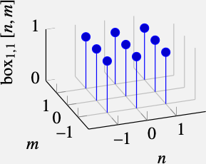
Box Filter
Visual examples
Box Filter
Properties
Low-pass: it attenuates the high spatial-frequency content of the input image.
2D box filter is separable and can be written as the convolution of two 1D kernels: \[ \text{box}_{N,M} \left[n,m \right] = \text{box}_{N,0} \circ \text{box}_{0,M}. \]
DC gain: the gain it has for a constant value input (i.e., the lowest possible input frequency). If the input signal is a constant, i.e., \(\ell[n,m] = a\), where \(a\) is a real number, the result of convolving the image with the box filter \(h_{N,M}\) is also a constant:
\[ \ell_{\text{out}} \left[n,m\right] = \sum_{k,l} a \text{box}_{N,M} \left[k,l \right] = a \sum_{k,l} \text{box}_{N,M} \left[k,l \right] = a (2N+1)(2M+1) \]
Box Filter
Tip
Remember that the DC value of a signal is its mean value. DC is an old name derived from Direct Current.
In general, the DC gain of an arbitrary filter \(h [n,m]\) is the sum of its kernel values:
\[ \text{DC gain} = \sum_{n,m} h [n,m] \] In the example of the box filter with \(N=1\), the DC gain is 3.
In the frequency domain, the DC gain of a filter refers to its gain at a frequency of 0, represented by the value \(H[0,0]\). The value of \(\left| \text{Box}_1[0] \right|\) is \(3\). The DC gain of a filter will change the mean value of the input signal.
Box Filter
Examples
Fig (a) A one-dimensional (1D) box filter (\(\left[1,1,1\right]\)), and (b) its Fourier transform over 20 samples. Note that the frequency gain is not monotonically decreasing with spatial frequency.
Box Filter
DC gain: normalization
- we generally want to have a DC gain of 1
- the reason is that if we have an image with grayscale levels in the range of 0 to 256 and with an average around 128, we will want to preserve the same mean value in the output.
- For this reason, in most applications, we will normalize the kernel values so that they sum 1.
- In the case of the box filter, this means dividing the kernel values by \((2N+1)(2M+1)\).
Box Filter
Limitations
- The box filter is not a perfect blurring filter.
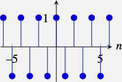
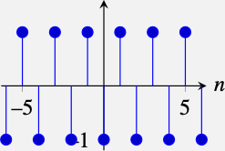
- If you convolve two boxes, you get a triangle. For \(N=1, M=0\):
\[ \text{box}_{1,0} \circ \text{box}_{1,0} = \left[1, 1, 1\right] \circ \left[1, 1, 1\right] = \left[1,2,3,2,1\right] \]
Gaussian Filter
Definition
The Gaussian distribution is defined in continuous variables. In one dimension:
\[ g(x; \sigma) = \frac{1}{\sqrt{2 \pi \sigma^2}} \exp{ \left( -\frac{x^2}{2 \sigma^2} \right) } \qquad(1)\]
and in two dimensions:
\[ g(x,y; \sigma) = \frac{1}{2 \pi \sigma^2} \exp{ \left(-\frac{x^2 + y^2}{2 \sigma^2} \right) } \qquad(2)\]
The parameter \(\sigma\) adjusts the spatial extent of the Gaussian. The normalization constant is set so that the function integrates to 1. The Gaussian kernel is positive and symmetric (a zero-phase filter).
Gaussian Filter
Discretization
We only need to consider samples within three standard deviations \(x \in (-3\sigma, 3\sigma)\).
For a given \(\sigma\):
\[ g \left[ n,m; \sigma \right] = \exp{ \left( -\frac{n^2 + m^2}{2 \sigma^2} \right) } \qquad(3)\]
1D Gaussian with \(\sigma=1\) and its discretized version
Gaussian Filter
Gaussian Filter
Multiple dimensions
Recall: \[ \ell_{\texttt{out}}\left[n,m\right] = h \left[n,m\right] \circ \ell_{\texttt{in}}\left[n,m\right] = \sum_{k,l}h \left[n-k,m-l \right] \ell_{\texttt{in}}\left[k,l \right] \qquad(4)\]
Letting \(g^x [n]=g[n,0]\), and \(g^y[m]=g[0,m]\)), we have:
\[ g \left[n,m \right] \circ \ell \left[n,m\right] = \sum_{k,l} g \left[n-k,m-l \right] \ell \left[k,l \right] = \sum_{k,l} \exp{ \left( -\frac{(n-k)^2 + (m-l)^2}{2 \sigma^2} \right) } \circ \ell \left[n,m \right] \]
\[ = \sum_{k} \exp{ \left( -\frac{(n-k)^2}{2 \sigma^2} \right) } \left( \sum_{l} \exp{ \left( -\frac{(m-l)^2}{2 \sigma^2} \right) } \ell \left[k,l \right] \right) = g^x \circ (g^y \circ \ell \left[n,m \right]) \qquad(5)\]
Gaussian Filter
Removing distractions
Gaussian Filter
Properties of the Continuous Gaussian
- The \(n\)-dimensional Gaussian is the only completely circularly symmetric operator that is separable.
- The continuous Fourier transform (FT) of a Gaussian is also a Gaussian. For a 1D Gaussian, its Fourier transform is:
\[ G (w; \sigma) = \exp{ \left( -\frac{w^2 \sigma^2} {2} \right) } \]
and in 2D the Fourier transform is:
\[ G (w_x, w_y; \sigma) = \exp{ \left(- \frac{(w_x^2+w_y^2) \sigma^2} {2} \right) } \qquad(6)\]
Note that this function is monotonically decreasing in magnitude for increasing frequencies, and it is also radially symmetric.
Gaussian Filter
Properties of the Continuous Gaussian
- The width of the Gaussian Fourier transform decreases with \(\sigma\) (this is the opposite behavior to the Gaussian in the spatial domain).
- The convolution of two \(n\)-dimensional Gaussians is an \(n\)-dimensional Gaussian.
\[ g (x,y; \sigma_1 ) \circ g (x,y; \sigma_2) = g (x,y; \sigma_3) \]
where the variance of the result is the sum \(\sigma_3^2 = \sigma_1^2 + \sigma_2^2\).
- The Gaussian is the solution to the heat equation.
- Repeated convolutions of any function concentrated in the origin result in a Gaussian (central limit theorem).
- In the limit \(\sigma \rightarrow 0\) the Gaussian becomes an impulse. This property is shared by many other functions, but it is a useful thing to know.
Gaussian Filter
Limitations
The convolution of discretized Gaussians is not a Gaussian anymore.
Let’s consider a Gaussian with variance \(\sigma^2=1/2\). It can be approximated by five samples. We will call this approximation \(g_5\) and it takes the values:
\[ g_5\left[ n \right] = \left[0.0183, \, 0.3679, \, 1.0000, \, 0.3679, \, 0.0183 \right] \]
If we compute the approximation for \(\sigma^2=1\) by discretizing the Gaussian, the result obtained is not equal to doing \(g_5 \circ g_5\): therefore, errors will accumulate.
Binomial Filters
Definition
Binomial coefficients: a common approximation of the Gaussian filter, obtained by successive convolutions of the box filter \(\left[1,1\right]\).
The binomial coefficients use the central limit theorem to approximate a Gaussian as successive convolutions of a very simple function. The binomial coefficients form the Pascal’s triangle as shown in figure.
\[ \begin{array}{*{20}{>{\centering\arraybackslash}p{.2cm}}{>{\arraybackslash}p{1.5cm}}} b_0 & ~ & ~ & ~ & ~ & ~ & ~ & ~ & ~ & ~ & 1 & ~ & ~ & ~ & ~ & ~ & ~ & ~ & ~ & ~ & \sigma_0^2=0\\ b_1 & ~ & ~ & ~ & ~ & ~ & ~ & ~ & ~ & 1 & ~ & 1 & ~ & ~ & ~ & ~ & ~ & ~ & ~ & ~ & \sigma_1^2=1/4\\ b_2 & ~ & ~ & ~ & ~ & ~ & ~ & ~ & 1 & ~ & 2 & ~ & 1 & ~ & ~ & ~ & ~ & ~ & ~ & ~ & \sigma_2^2=1/2\\ b_3 & ~ & ~ & ~ & ~ & ~ & ~ & 1 & ~ & 3 & ~ & 3 & ~ & 1 & ~ & ~ & ~ & ~ & ~ & ~ & \sigma_3^2=3/4\\ b_4 & ~ & ~ & ~ & ~ & ~ & 1 & ~ & 4 & ~ & 6 & ~ & 4 & ~ & 1 & ~ & ~ & ~ & ~ & ~ & \sigma_4^2=1\\ b_5 & ~ & ~ & ~ & ~ & 1 & ~ & 5 & ~ &10 & ~ & 10 & ~ & 5 & ~ & 1 & ~ & ~ & ~ & ~ & \sigma_5^2=5/4\\ b_6 & ~ & ~ & ~ & 1 & ~ & 6 & ~ & 15 & ~ & 20 & ~ & 15 & ~ & 6 & ~ & 1 & ~ & ~ & ~ & \sigma_6^2=3/2\\ b_7 & ~ & ~ & 1 & ~ & 7 & ~ & 21 & ~ & 35 & ~ & 35 & ~ & 21 & ~ & 7 & ~ & 1 & ~ & ~ & \sigma_7^2=7/4\\ b_8 & ~ & 1 & ~ & 8 & ~ & 28 & ~ & 56 & ~ & 70 & ~ & 56 & ~ & 28 & ~ & 8 & ~ & 1 & ~ & \sigma_8^2=2 \end{array} \]
Binomial coefficients. To build the Pascal’s triangle, each number is the sum of the number above to the left and the one above to the right.
Binomial Filters
Properties
Binomial coefficients provide a compact approximation of the Gaussian coefficients using only integers. Note that the values of \(b_2\) are different from \(g_5\) despite that both will be used as approximations to a Gaussian with the same variance \(\sigma^2 = 1/2\). The thing to note is that the variance of \(g_5\) is not really \(\sigma^2 = 1/2\) despite being obtained by discretizing a Gaussian with that variance.
The sum of all the coefficients (DC gain) for each binomial filter \(b_n\) is \(2^n\), and their spatial variance is \(\sigma^2 = n/4\).
One remarkable property of the binomial filters is that \(b_n \circ b_m = b_{n+m}\), and, therefore, \(\sigma_n^2 + \sigma_m^2 = \sigma_{n+m}^2\), which is analogous to the Gaussian property in the continuous domain. That is, the convolution of two binomial filters is another binomial filter.
Binomial Filters
Properties
- The simplest approximation to the Gaussian filter is the 3-tap binomial kernel:
\[ b_2 = \left[1, 2, 1\right] \]
Its DFT is:
\[ B_2 \left[u\right] = 2+2 \cos (2 \pi u/N) \]
Binomial Filters
Properties
- All the even binomial filters can be written as successive convolutions with the kernel \(\left[1,2,1\right]\). Therefore, their Fourier transform is a power of the Fourier transform of the filter \(\left[1,2,1\right]\) and therefore they are also monotonic:
\[ B_{2n} \left[u\right] = (2+2 \cos (2 \pi u/N))^n \]
The filter transfer function, \(B_{2n}\), is real and positive. It is a zero-phase filter.
- For all the binomial filters \(b_n\), when they are convolved with the wave \(\left[1,-1,1,-1,...\right]\), the result is the zero signal \(\left[0,0,0,0,...\right]\). This is a very nice property of binomial filters and will become very useful later when talking about downsampling an image.
Binomial Filters
2D Binomial Filters
The Gaussian in 2D can be approximated, as the convolution of two binomial filters:
\[ b_{2,2} = b_{2,0} \circ b_{0,2} = \begin{bmatrix} 1 & 2 & 1 \\ \end{bmatrix}\circ \begin{bmatrix} 1 \\ 2 \\ 1 \end{bmatrix}= \begin{bmatrix} 1 & 2 & 1 \\ 2 & 4 & 2\\ 1 & 2 & 1 \end{bmatrix} \]
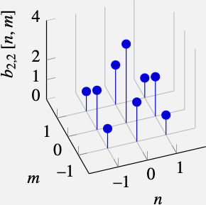
Binomial Filters
Example
Image corrupted by a checkerboard-pattern noise (right) and its output to two different blur kernels: (middle) \(3 \times 3\) box filter. (right) Binomial filter \(b_{2,2}\).
Concluding Remarks
Note
- the Gaussian and the binomial filters are widely used in computer vision.
- the binomial filter \([1,2,1]/4\) (here normalized so that its DC gain is 1), and its 2D extension, are very useful kernels that you can use in many situations like when you need to remove high-frequency noise, or downsample an image by a factor of 2.
- Blur kernels are useful when building image pyramids, or in neural networks when performing different pooling operations or when resizing feature maps.
Image Derivatives
Introduction
Derivatives
Computing image derivatives is an essential operator for extracting useful information from images:
- boundaries computation
- figuring out where changes are happening in the image.
The derivative operator is linear and translation invariant \(\Rightarrow\) can be written as a convolution.
Figure 12: Computing image derivatives along \(x\)- and \(y\)-dimensions.
Image Derivatives
Image Derivatives
Discretizing
If we had access to the continuous image, then image derivatives could be computed as: \(\partial \ell (x,y) / \partial x\), which is defined as:
\[ \frac{\partial \ell(x,y)} {\partial x} = \lim_{\epsilon \to 0} \frac{ \ell(x+\epsilon,y) -\ell(x,y)} {\epsilon} \]
However, there are several reasons why we might not be able to apply this definition:
- We only have access to a sampled version of the input image, \(\ell \left[n,m\right]\), and we cannot compute the limit when \(\epsilon\) goes to zero.
- The image could contain many non-derivable points, and the gradient would not be defined. We will see how to address this issue later when we study Gaussian derivatives.
- In the presence of noise, the image derivative might not be meaningful as it might just be dominated by the noise and not by the image content.
Image Derivatives
Approximation
As the derivative is a linear operator, it can be approximated by a discrete linear filter.
Let’s start with \(d_0 = \left[1, -1 \right]\). In 1D, convolving a signal \(\ell \left[n \right]\) with this filter results in: \[ \ell \circ d_0 = \ell \left[n \right] - \ell \left[n-1 \right] \] This is due to the fact that \(d_0 \left[n\right]\) is not centered around the origin.
This can be addressed with a different approximation to the spatial derivative \(d_1 = \left[1, 0, -1 \right]/2\). In one dimension, convolving a signal \(\ell \left[n \right]\) with \(d_1 \left[n\right]\) results in: \[ \ell \circ d_1 = \frac{\ell \left[n+1 \right] - \ell \left[n-1 \right]}{2} \]
Image Derivatives
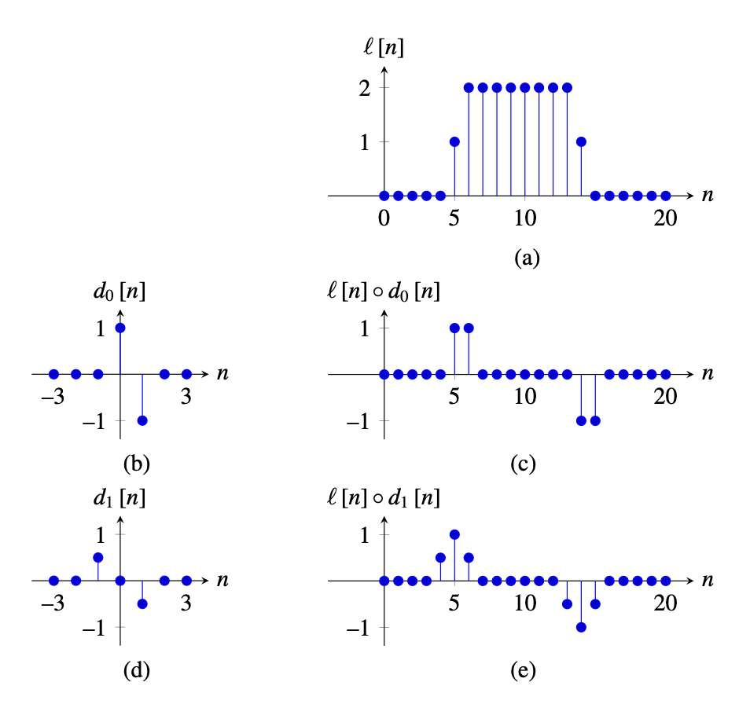Figure 14: (a) Input signal, \(\ell [n]\). (b) Convolutional kernel \(d_0 [n]\), defined as \(d_0 [0]=1\) and \(d_0 [1]=-1\) and zero everywhere else. (c) Output of the convolution between \(\ell [n]\) and \(d_0 [n]\). (d) Kernel \(d_1 [n]\), defined as \(d_1 [-1]=1\) and \(d_1 [1]=-1\) and zero everywhere else. (e) Output of the convolution between \(\ell [n]\) and \(d_1 [n]\).
Image Derivatives
Approximation: continuous Fourier domain
In the continuous domain, the relationship between the Fourier transform on a function and the Fourier transform of its derivative is: \[ \frac{\partial \ell (x)}{\partial x} \xrightarrow{\mathscr{F}} j w \mathscr{L} (w) \] In the continuous Fourier domain, derivation is equivalent to multiplying by \(jw\).
Image Derivatives
Approximation: discrete Fourier domain
The DFT of \(d_0 \left[n\right]\) is: \[ \begin{split} D_0 \left[u \right] & = 1 - \exp \left( -2 \pi j \frac{u}{N} \right) \\ & = \exp \left( - \pi j \frac{u}{N} \right) \left( \exp \left( \pi j \frac{u}{N} \right) - \exp \left( -\pi j \frac{u}{N} \right) \right) \\ & = \exp \left( - \pi j \frac{u}{N} \right) 2 j \sin (\pi u /N) \end{split} \] The first term is a pure phase shift, the second term is the amplitude gain.
The DFT of \(d_1 \left[n\right]\) is: \[ \begin{split} D_1 \left[u \right] & = 1/2\exp \left( 2 \pi j \frac{u}{N} \right) - 1/2 \exp \left( -2 \pi j \frac{u}{N} \right) \\ & = j \sin (2 \pi u /N) \end{split} \]
Image Derivatives
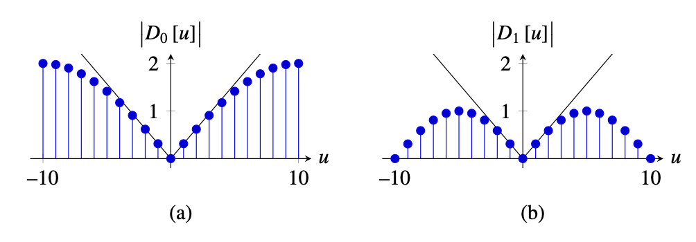Figure 15: Magnitude of (a) \(D_0\left[u \right]\) and (b) \(D_1\left[u \right]\) and comparison with \(\left| 2 \pi u/N \right|\), shown as a thin black line. Both DFTs are computed over 20 samples.
Image Derivatives
Approximation in 2D
- We can compute derivatives along the \(n\) and \(m\) components:
Problem: outputs are spatially misaligned because a filter of length 2 shifts the output image by half a pixel as we discussed earlier.
- We can use a rotated reference frame as it is done in the Roberts cross operator (1963):
Now, both outputs are spatially aligned because they are shifted in the same way.
Gradient-Based Image Representation
Recovering original image
Perhaps by integrating?
This is the matrix that corresponds to the convolution with the kernel \(\left[1, -1 \right]\) that we will call \(\mathbf{D_0}\). The next two matrices show the matrix \(\mathbf{D_0}\) and its inverse \(\mathbf{D_0}^{-1}\) for a 1D image of length five pixels using zero boundary conditions:
\[ \mathbf{D_0} = \begin{bmatrix} 1 ~& 0 ~& 0 ~& 0~& 0 \\ -1 ~& 1 ~& 0 ~& 0~& 0 \\ 0 ~& -1 ~& 1 ~& 0 ~& 0\\ 0~& 0 ~& -1 ~& 1 ~& 0\\ 0~& 0 ~& 0 ~& -1 ~& 1 \end{bmatrix} \]
\[ \mathbf{D_0}^{-1} = \begin{bmatrix} 1 ~&~ 0 ~&~ 0 ~&~ 0~&~ 0 \\ 1 ~&~ 1 ~&~ 0 ~&~ 0~&~ 0 \\ 1 ~&~ 1 ~&~ 1 ~&~ 0 ~&~ 0\\ 1~&~ 1 ~&~ 1 ~&~ 1 ~&~ 0\\ 1~&~ 1 ~&~ 1 ~&~ 1 ~&~ 1 \end{bmatrix} \] First sample of the derivative gets to see the actual value of the input signal, and then we can integrate back the entire signal.
Gradient-Based Image Representation
Recovering original image
But what happens if you only get to see valid differences and you remove any pixel that was affected by the boundary? In this case, the derivative operator in matrix form is:
\[ \mathbf{D_0} = \begin{bmatrix} -1 ~& 1 ~& 0 ~& 0~& 0 \\ 0 ~& -1 ~& 1 ~& 0 ~& 0\\ 0~& 0 ~& -1 ~& 1 ~& 0\\ 0~& 0 ~& 0 ~& -1 ~& 1 \end{bmatrix} \]
Gradient-Based Image Representation
Recovering original image
Let’s consider the next 1D input signal:
\[ \boldsymbol\ell = \left[1, 1, 2, 2, 0\right] \]
Then, the output of the derivative operator is:
\[ \mathbf{r}=\mathbf{D_0} \boldsymbol\ell=\left[0, -1, 0, 2\right] \]
\[ \mathbf{D_0}^{+} = \frac{1}{5} \begin{bmatrix} -4 ~& -3 ~& -2~& -1 \\ 1 ~& -3 ~& -2 ~&-1 \\ 1~& 2 ~& -2 ~& -1\\ 1~& 2 ~& 3 ~& -1\\ 1~& 2 ~& 3 ~& 4 \end{bmatrix} \]
In this example, the reconstructed input is:
\[ \hat{\boldsymbol\ell} = \mathbf{D_0}^{+} \mathbf{r} = \left[-0.2, -0.2, 0.8, 0.8, -1.2 \right] \] Note that \(\hat{\boldsymbol\ell}\) is a zero mean vector. In fact, the recovered input is a shifted version of the original input, \(\hat{\boldsymbol\ell} = \boldsymbol\ell - 1.2\), where 1.2 is the mean value of samples on \(\boldsymbol\ell\).
Image Editing in the Gradient Domain
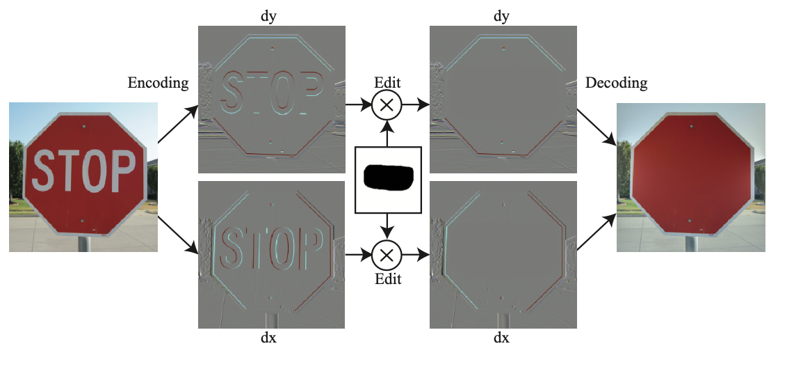Figure 16: Image inpainting: Using image derivatives, we delete the word “stop” by setting to zero the gradients indicated by the mask. The resulting decoded image propagates the red color inside the region that contained the word.
Image Editing in the Gradient Domain
Encoding/Decoding
First, the image is encoded using derivatives along the \(x\) and \(y\) dimensions: \[ \mathbf{r} = \left[ \begin{array}{c} \mathbf{D_x} \\ \mathbf{D_y} \end{array} \right] \boldsymbol\ell \]
The resulting representation, \(\mathbf{r}\), contains the concatenation of the output of both derivative operators. \(\mathbf{r}\) will have high values in the image regions that contain changes in pixel intensities and colors and will be near zero in regions with small variations.
This representation can be decoded back into the input image by using the pseudoinverse as we did in the 1D case. The pseudoinverse can be efficiently computed in the Fourier domain.
Gaussian Derivatives
Noise sensitivity
Gaussian Derivatives
Undefined derivative
Consider an image in the continuous domain with the form \(\ell (x,y) = 0\) if \(x<0\) and 1 otherwise.
- If we try to compute \(\partial \ell (x,y) / \partial x\), we will get 0 everywhere, but around \(x=0\) the value of the derivative is not defined.
- We avoided this issue in the previous section because for discrete images the approximation of the derivative is always defined.
Solution
Gaussian derivatives address these two issues. They were popularized by Koenderink and Van Doorm @Koenderink87 as a model of neurons in the visual system.
Gaussian Derivatives
Observation: commutativity
Let’s start with the following observation. For two functions defined in the continuous domain \(\ell(x,y)\) and \(g(x,y)\), the convolution and the derivative are commutative: \[ \frac {\partial \ell(x,y)}{\partial x} \circ g(x,y) = \ell(x,y) \circ \frac {\partial g(x,y)}{\partial x} \]
Instead of computing the derivative of the image we can compute the derivatives of the filter kernel and convolve it with the image.
Gaussian Derivatives
Smoothing
If \(g(x,y)\) is a blurring kernel, it will smooth the derivatives, reducing the output noise at the expense of a loss in spatial resolution. A common smoothing kernel for computing derivatives is the Gaussian kernel.
If \(g\) is a Gaussian, then the first-order derivative is \[ \begin{split} g_x(x,y; \sigma) & = \frac {\partial g(x,y; \sigma)}{\partial x} \\ & = \frac{-x}{2 \pi \sigma^4} \exp{-\frac{x^2 + y^2}{2 \sigma^2}} \\ & = \frac{-x}{\sigma^2} g(x,y; \sigma) \end{split} \qquad(7)\]
Gaussian Derivatives
Gaussian Derivatives
High-Order Gaussian Derivatives
Computation
The second-order derivative of a Gaussian is: \[ g_{x^2}(x,y; \sigma) = \frac{x^2-\sigma^2}{\sigma^4} g(x,y; \sigma) \]
The general expression for the \(n\) derivative of a Gaussian is: \[ g_{x^n}(x; \sigma) = \frac{\partial^{n} g(x)}{\partial x^n} = \left( \frac{-1}{\sigma \sqrt{2}} \right)^n H_n\left( \frac{x}{\sigma \sqrt {2}} \right) g(x; \sigma) \]
The first Hermite polynomial is \(H_0(x)=1\), the second is \(H_1(x) = 2x\), the third is \(H_2(x)=4x^2-2\), and they can be computed recursively as: \[ H_n(x) = 2x H_{n-1}(x) - 2(n-1)H_{n-2}(x) \]
High-Order Gaussian Derivatives
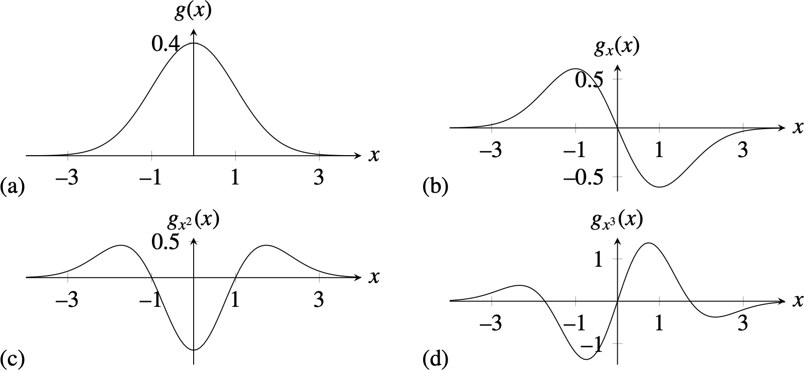Figure 20: Fig (a) 1D Gaussian with \(\sigma=1\). (b–d) Gaussian derivatives up to order 3.
High-Order Gaussian Derivatives
Partial derivatives
In two dimensions, as the Gaussian is separable, the partial derivatives result on the product of two Hermite polynomial, one for each spatial dimension:
\[ \begin{split} g_{x^n,y^m}(x,y; \sigma) & = \frac{\partial^{n+m} g(x,y)}{\partial x^n \partial y^m} \\ & = \left( \frac{-1}{\sigma \sqrt{2}} \right)^{n+m} H_n\left( \frac{x}{\sigma \sqrt {2}} \right) H_m\left( \frac{y}{\sigma \sqrt {2}} \right) g(x,y; \sigma) \end{split} \qquad(8)\]
High-Order Gaussian Derivatives
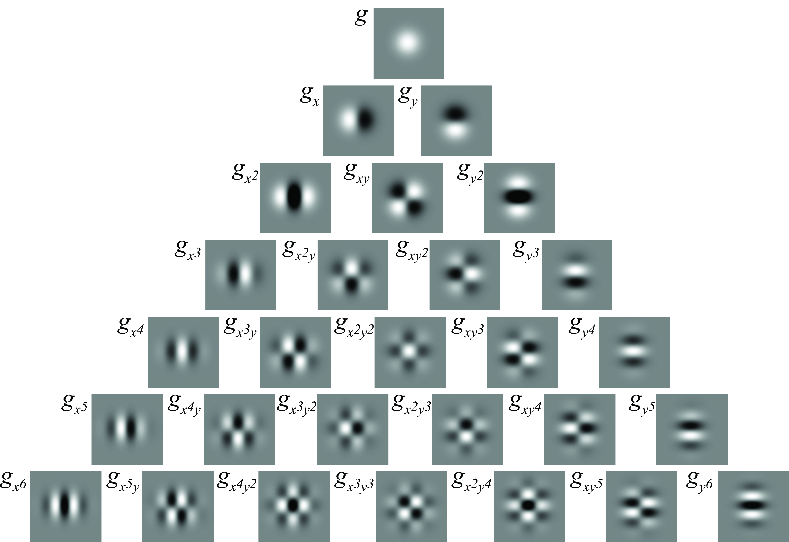
Figure 21: Gaussian derivatives up to order 6. All the kernels are separable. They seem similar to Fourier basis multiplied with a Gaussian window.
Figure 22 shows that they are different from sine and cosine waves; instead, they look more like products of cosine and sine waves.
High-Order Gaussian Derivatives

Figure 22: Fourier transform of the Gaussian derivatives shown in Figure 21.
High-Order Gaussian Derivatives
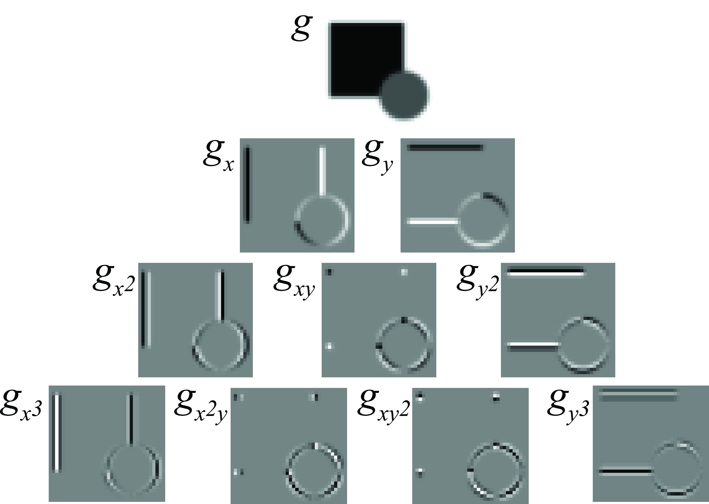An image containing a square and a circle and its output to the Gaussian derivatives up to order 3.
Derivatives using Binomial Filters
Discrete approximations
When processing images we have to use discrete approximations for the Gaussian derivatives. After discretization, many of the properties of the continuous Gaussian will not hold exactly.
There are many discrete approximations. For instance, we can take samples of the continuous functions. In practice it is common to use the discrete approximation given by the binomial filters. Below is the result of convolving the binomial coefficients, \(b_n\), with \(\left[1, -1\right]\).
\[\begin{array}{ccccccccccccccccccccl} d_0 & ~ & ~ & ~ & ~ & ~ & ~ & ~ & ~ & ~~1 & ~~~ & -1 & ~ & ~ & ~ & ~ & ~ & ~ & ~ & ~ &\\ d_1 & ~ & ~ & ~ & ~ & ~ & ~ & ~ & ~~1 & ~ & ~~0 & ~ & -1 & ~ & ~ & ~ & ~ & ~ & ~ & ~ & \\ d_2 & ~ & ~ & ~ & ~ & ~ & ~ & ~~~1 & ~ & ~~~1 & ~~~ & -1 & ~ & -1 & ~ & ~ & ~ & ~ & ~ & ~ & \\ d_3 & ~ & ~ & ~ & ~ & ~ & ~~~1 & ~ & ~~~2 & ~ & ~~0 & ~~~ & -2 & ~ & -1 & ~ & ~ & ~ & ~ & ~ &\\ d_4 & ~ & ~ & ~ & ~ & ~~~1 & ~ & ~~~3 & ~ & ~~~2 & ~~~ & -2 & ~ & -3 & ~ & -1 & ~ & ~ & ~ & ~ &\\ d_5 & ~ & ~ & ~ & ~~~1 & ~ & ~~~4 & ~ & ~~~5 & ~ & ~~0 & ~ & -5 & ~ & -4 & ~ & -1 & ~ & ~ & ~ & \end{array}\]Derivative of binomial coefficients resulting from the convolution \(b_n \circ \left[1, -1\right]\). The filters, \(d_0\) and \(d_1\), are the ones we have studied in the previous section.
Derivatives using Binomial Filters
Sobel operator
In two dimensions, we can use separable filters and build a partial derivative as:
\[ Sobel_x = \begin{bmatrix} 1 & 0 & -1 \\ \end{bmatrix} \circ \begin{bmatrix} 1 \\ 2 \\ 1 \end{bmatrix} = \begin{bmatrix} 1 & 0 & -1 \\ 2 & 0 & -2 \\ 1 & 0 & -1 \end{bmatrix} \]
\[ Sobel_y = \begin{bmatrix} -1 & -2 & -1 \\ 0 & 0 & 0 \\ 1 & 2 & 1 \end{bmatrix} \qquad(9)\]
This particular filter is called the Sobel-Feldman operator.
The goal of this operator was to be compact and as isotropic as possible. The Sobel-Feldman operator can be implemented very efficiently as it can be written as the convolution with four small kernels, \[Sobel_x = b_1 \circ d_0 \circ b_1^T \circ b_1^T.\]
Derivatives using Binomial Filters
DFT of the Sobel-Feldman operator
The DFT of the Sobel-Feldman operator is:
\[ Sobel_x \left[u,v \right] = D_1\left[u\right] B_2 \left[v \right] = j \sin \left( 2 \pi u /N \right) \left( 2+2 \cos \left(2 \pi v/N \right) \right) \]
Figure 23: Magnitude of the DFT of four different discretizations of Gaussian derivatives: (a) (d_0); (b) (d_1); (c) Robert cross operator; and (d) Sobel-Feldman operator.
Derivatives using Binomial Filters
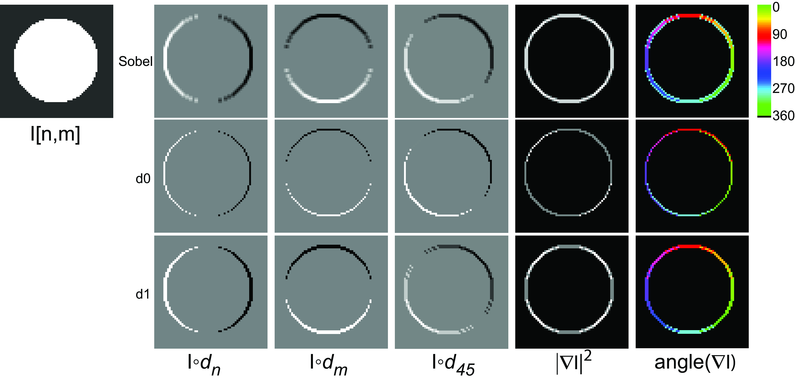Figure 24: Derivatives of a circle along the directions \(n\), \(m\), and 45 degrees. The angle is shown only where the magnitude is \(>0\). The derivative output along 45 degrees is obtained as a linear combination of the derivatives outputs along \(n\) and \(m\). Check the differences among the different kernels. The Sobel operator gives the most rotationally invariant gradient magnitude, but it is blurrier.
Directional Derivatives
Image gradient
From the image derivatives, we can also define the image gradient as the vector: \[ \nabla \ell (x,y) = \left( \frac{\partial \ell(x,y)}{\partial x}, \frac{\partial \ell(x,y)}{\partial y} \right) \] For each pixel, the output is a 2D vector. In the case of using Gaussian derivatives, we can write: \[ \nabla \ell \circ g = \nabla g \circ \ell = \left( g_x(x,y), g_y(x,y) \right) \circ \ell \]
Although we have mostly computed derivatives along the \(x\) and \(y\) variables, we can obtain the derivative in any orientation as a linear combination of the two derivatives along the main axes. With \({\bf t}=\left( \cos (\theta), \sin(\theta) \right)\), we can write the directional derivative along the vector \({\bf t}\) as: \[ \frac{\partial \ell (x,y)}{\partial {\bf t}} = \nabla \ell \cdot {\bf t} = \cos(\theta) \frac{\partial \ell}{\partial x} + \sin(\theta) \frac{\partial \ell}{\partial y} \]
Directional Derivatives
Image gradient
In the Gaussian case: \[ \begin{split} \frac{\partial \ell}{\partial {\bf t}} \circ g & = \left( \cos(\theta) g_x(x,y) + \sin(\theta) g_y(x,y) \right) \circ \ell \\ & = \left( \nabla g \cdot {\bf t} \right) \circ \ell \\ & = g_{\theta} (x,y) \circ \ell(x,y) \end{split} \qquad(10)\]
with \(g_{\theta} (x,y) = \cos(\theta) g_x(x,y) + \sin(\theta) g_y(x,y)\).
However, to compute the derivative along any arbitrary angle \(\theta\) does not require doing new convolutions. Instead, we can compute any derivative as a linear combination of the output of convolving the image with \(g_x(x,y)\) and \(g_y(x,y)\): \[ \frac{\partial \ell}{\partial {\bf t}} \circ g = \cos(\theta) g_x(x,y) \circ \ell + \sin(\theta) g_y(x,y) \circ \ell(x,y) \]
Directional Derivatives
Image gradient
When using discrete convolutional kernels \(d_n\left[n,m\right]\) and \(d_m\left[n,m\right]\) to approximate the derivatives along \(n\) and \(m\), it can be written as: \[ \nabla \ell = \left( d_n\left[n,m\right], d_m\left[n,m\right] \right) \circ \ell \left[n,m\right] \] and \[ \frac{\partial \ell}{\partial {\bf t}} \circ g = d_{\theta} \left[n,m\right] \circ \ell \left[n,m\right] \]
with \(d_{\theta} \left[n,m\right] = \cos(\theta) d_n\left[n,m\right] + \sin(\theta) d_m\left[n,m\right]\). We expect that the linear combination of these two kernels should approximate the derivative along the direction \(\theta\).
Image Laplacian
Definition
The Laplacian filter was made popular by Marr and Hildreth in 1980 in the search for operators that locate the boundaries between objects.
\[ \nabla^2 \ell = \frac{\partial^2 \ell}{\partial x^2} + \frac{\partial^2 \ell}{\partial y^2} \]
Important
The Laplacian is more sensitive to noise than the first order derivative.
Image Laplacian
Smoothing
It is useful to smooth the output with a Gaussian kernel, \(g(x,y)\). We can write,
\[ \nabla^2 \ell \circ g = \nabla^2 g \circ \ell \]
Therefore, the same result can be obtained if we first compute the Laplacian of the Gaussian kernel, \(g(x,y)\) and then convolve it with the input image. The Laplacian of the Gaussian is
\[ \nabla^2 g = \frac{x^2 + y^2 -2\sigma^2}{\sigma^4} g(x,y) \]
Image Laplacian
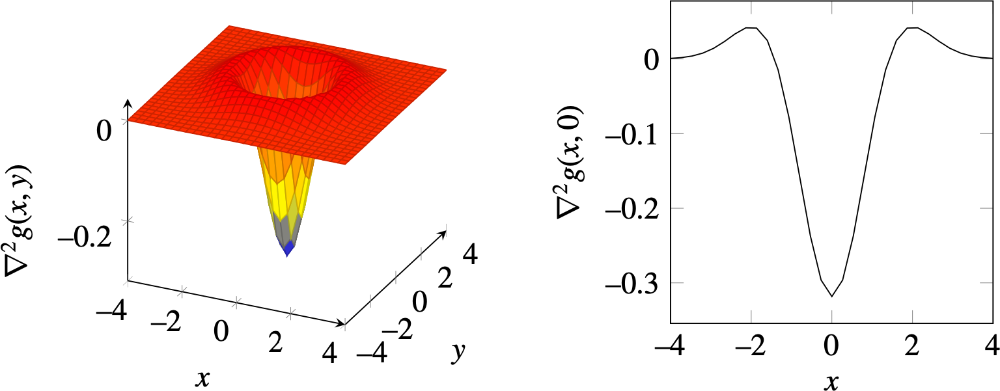Figure 25: The Gaussian Laplacian (\(\sigma = 1\)) is also called the inverted mexican hat wavelet. (a) 2D plot. (b) 1D section at \(y=0\).
Image Laplacian
Discrete approximation
In one dimension, the Laplacian can be approximated by \([1,-2,1]\), which is the result of the convolution of two 2-tap discrete approximations of the derivative \([1,-1] \circ [1,-1]\). In two dimensions, the most popular approximation is the five-point formula, which consists of convolving the image with the kernel:
\[ \nabla_5^2 = \begin{bmatrix} 0 & 1 & 0 \\ 1 & -4 & 1\\ 0 & 1 & 0 \end{bmatrix} \qquad(11)\]
The Laplacian of the image, using the five-point formula, is: \[ \begin{split} \nabla_5^2 \ell[n,m] = & - 4 \ell[n,m] \\ & + \ell[n+1,m] \\ & + \ell[n-1,m] \\ & + \ell[n,m+1] \\ & + \ell[n,m-1] \end{split} \]
Image Laplacian
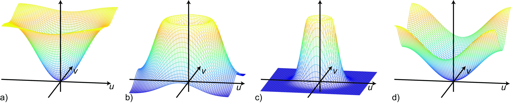Figure 26: Magnitude of the DFT of the Gaussian Laplacian with (a) \(\sigma=1/2\); (b) \(\sigma=1\); (c) \(\sigma=2\); and (d) DFT of the five-point discrete approximation, Equation 11.
Image Laplacian
Image Laplacian
Advantages
- It is rotationally invariant. It is a linear operator that responds equally to edges in any orientation (this is only approximate in the discrete case).
- It measures curvature. If the image contains a linear trend the derivative will be non-zero despite having no boundaries, while the Laplacian will be zero.
- Edges can be located as the zero-crossings in the Laplacian output. However, this way of detecting edges is not very reliable.
- Zero crossings of an image form closed contours.
Image Laplacian
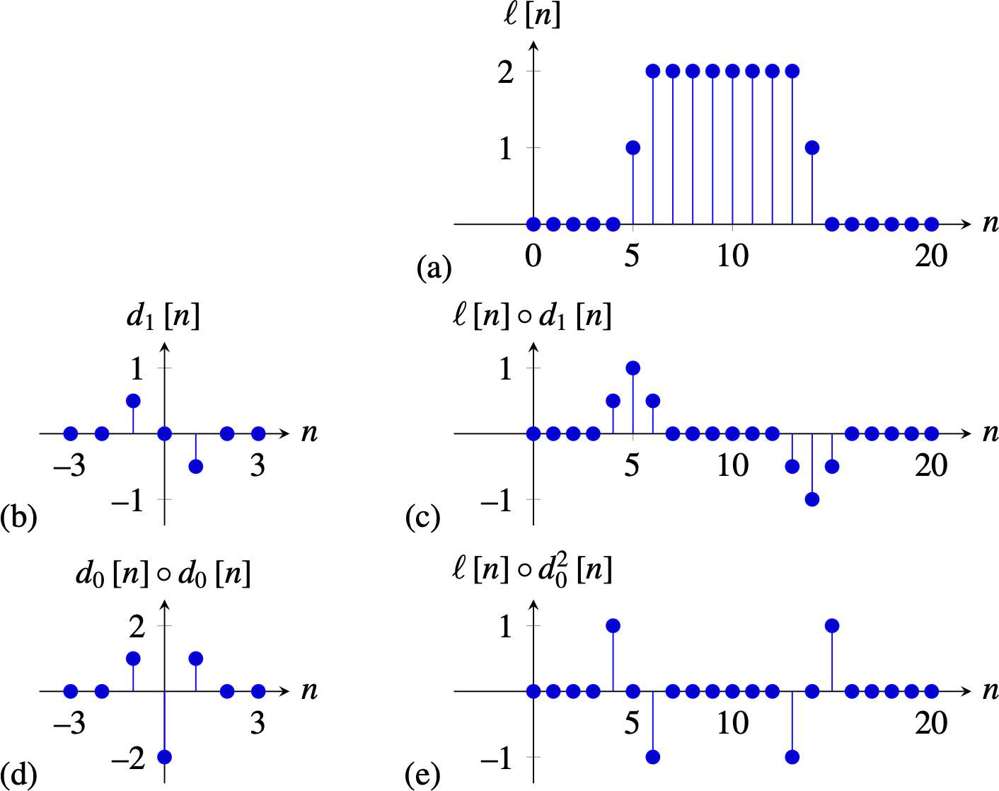Figure 28: Comparison between the output of a first-order derivative and the Laplacian of 1D signal. (a) Input signal. (b) Kernel \(d_1\). (c) Output of the derivative, that is, convolution of (a) and (b). (d) Discrete approximation of the Laplacian. (e) Output of convolving the signal (a) with the Laplacian kernel.
Early Visual System Model
Approximation of the visual system
We can better approximate Campbell and Robson chart with
\[ h = -\nabla^2 g + \lambda g \qquad(12)\]
The kernel \(h\) is the approximate impulse response of the human visual system, \(\lambda\) is a small constant that is equal to the DC gain of the visual filter (here \(\lambda = 2\) and \(\sigma=5\)).
Early Visual System Model

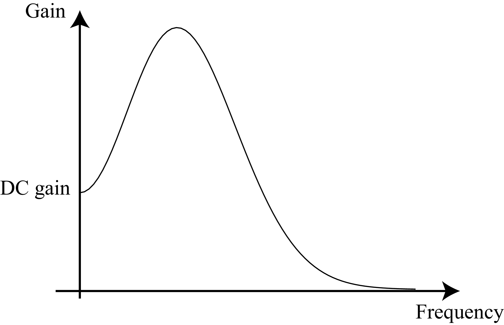
Early Visual System Model
Sharpening Filter
Definition
Sharpening can be achieved by amplifying the amplitude of the high-spatial frequency content of the image. We start with twice the original image (sharp plus blurred parts), then subtract away the blurred components of the image:
\[ \text{sharpening filter} = \begin{bmatrix} 0 & 0 & 0 \\ 0 & 2 & 0\\ 0 & 0 & 0 \end{bmatrix} - \frac{1}{16} \begin{bmatrix} 1 & 2 & 1 \\ 2 & 4 & 2\\ 1 & 2 & 1 \end{bmatrix} \qquad(13)\]
Note that the DC gain of this sharpening filter is 1.
Sharpening Filter
Retinex
Retinex
How do you tell gray from white? The amount of light that reaches the eye from a painted piece of paper is the result of two quantities:
- the amount of light reaching the piece of paper
- the reflectance of the surface
Figure 33: Simultaneous contrast illusion. What happens if we see two patches of unknown reflectance, and each is illuminated with two different light sources of unknown identity?
Retinex
Image formation
Let’s think of the image formation process. The surface is made of patches of different reflectances \(r(x,y) \in (0,1)\). Each location receives an illumination \(l(x,y)\). The observed brightness is the product:
\[ \ell(x,y) = r(x,y) \times l(x,y) \]
Despite what reaches the eye is the signal \(\ell(x,y)\), our perception is not the value of \(\ell(x,y)\). In fact, the squares 1 and 2 in Figure 33 have the exact same values of intensity, but we see them differently, which is generally explained by saying that we discount (at least partially) the effects of the illumination, \(l(x,y)\).
Retinex
The Retinex algorithm, by Land and McCann [@Land1971], is based on modeling images as if they were part of a Mondrian world (images that look like the paintings of Piet Mondrian).
Retinex
Algorithm
But how can we estimate \(r(x,y)\) and \(l(x,y)\) by only observing \(\ell(x,y)\)?
The Retinex algorithm works by first extracting \(x\) and \(y\) spatial derivatives of the image \(\ell(x,y)\) and then thresholding the gradients.
- First, we transform the product into a sum using the \(\log\):
\[ \log \ell(x,y) = \log r(x,y) + \log l(x,y) \]
- Taking derivatives along \(x\) and \(y\) is now simple:
\[ \frac{\partial \log \ell(x,y)}{\partial x} = \frac{\partial \log r(x,y)}{\partial x} + \frac{\partial \log l(x,y)}{\partial x} \] And the same thing is done for the derivative along \(y\).
Retinex
Algorithm
- Any derivative larger than the threshold is assigned to the derivative of the reflectance image \(r(x,y)\), and the ones smaller than a threshold are assigned to the illumination image \(l(x,y)\):
\[ \frac{\partial \log r(x,y)}{\partial x} = \begin{cases} \frac{\partial \log \ell(x,y)}{\partial x} & \text{if} ~ \left| \frac{\partial \log \ell(x,y)}{\partial x} \right|>T\\ 0 & \text{otherwise} \end{cases} \]
- Then, the image \(\log r(x,y)\) is obtained by integrating the gradients, and exponentiating the result. Finally, the illumination can be obtained as \(l(x,y) = \ell(x,y)/r(x,y)\).
Retinex
Figure 34: Derivatives classified into reflectance or luminance components.
Retinex
Figure 35: Recovered components. The estimated reflectance, \(r(x,y)\), is close to what we perceive. It seems that what we perceive contains part of \(l(x,y)\).
Retinex
Assumptions
- the illumination image, \(l(x,y)\), varies smoothly
- the reflectance image, \(r(x,y)\), is composed of uniform regions separated by sharp boundaries
Concluding Remarks
In this chapter we have covered a very powerful image representation: image derivatives (first order, second order, and the Laplacian) and their discrete approximations. Despite the simplicity of this representation, we have seen that it can be used in a number of applications such as image inpaining, separation of illumination and reflectance, and it can be used to explain simple visual illusions. It is not surprising that similar filters like the ones we have seen in this chapter emerge in convolutional neural networks when trained to solve visual tasks.